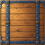
mod_armor11.png
Light Ironwood Planking
Defence · P1 · 64 × 64136 footprint module sprites · P1 76 / P2 51 / P3 9 · 64 px per cell

Light Ironwood Planking
Defence · P1 · 64 × 64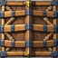
Light Ram Planking
Defence · P1 · 64 × 64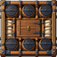
Small Powder Store
Defence · P1 · 64 × 64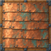
Light Copper Sheathing
Defence · P1 · 64 × 64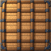
Light Cork Planking
Defence · P1 · 64 × 64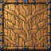
Light Living-oak Planking
Defence · P1 · 64 × 64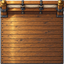
Small Bulwark Planking
Defence · P1 · 64 × 64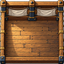
Small Bulwark Timbers
Defence · P1 · 64 × 64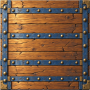
Ironwood Planking
Defence · P1 · 128 × 128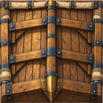
Ram Planking
Defence · P1 · 128 × 128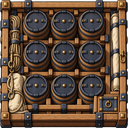
Powder Store
Defence · P1 · 128 × 128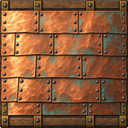
Copper Sheathing
Defence · P1 · 128 × 128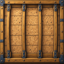
Cork Planking
Defence · P1 · 128 × 128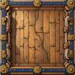
Living-oak Planking
Defence · P1 · 128 × 128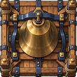
Thunder Bell, Thunder Bell M2, Fog Lanterns
Defence · P1 · 128 × 128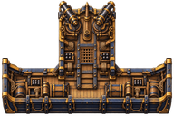
Swivel Guns, Reinforced Hull
Defence · P1 · 192 × 128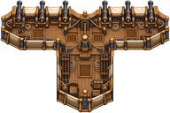
Bow Bulwark
Defence · P1 · 192 × 128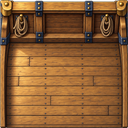
Medium Bulwark Planking
Defence · P1 · 128 × 128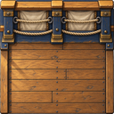
Medium Bulwark Timbers
Defence · P1 · 128 × 128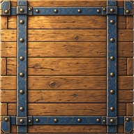
Heavy Ironwood Planking
Defence · P1 · 192 × 192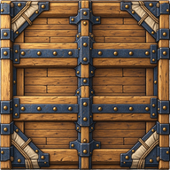
Heavy Ram Planking
Defence · P1 · 192 × 192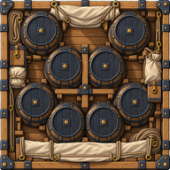
Heavy Powder Store
Defence · P1 · 192 × 192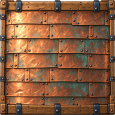
Heavy Copper Sheathing
Defence · P1 · 192 × 192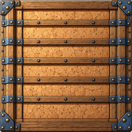
Heavy Cork Planking
Defence · P1 · 192 × 192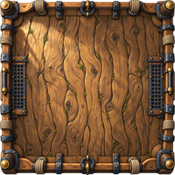
Heavy Living-oak Planking
Defence · P1 · 192 × 192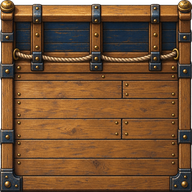
Large Bulwark Planking
Defence · P1 · 192 × 192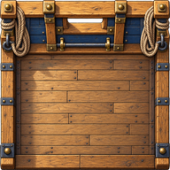
Large Bulwark Timbers
Defence · P1 · 192 × 192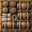
Small Powder Kegs
Powder · P1 · 64 × 64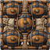
Small Iron-bound Powder Kegs
Powder · P1 · 64 × 64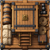
Small Powder Magazine
Powder · P1 · 64 × 64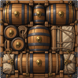
Powder Kegs
Powder · P1 · 128 × 128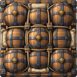
Iron-bound Powder Kegs
Powder · P1 · 128 × 128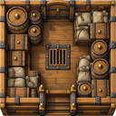
Powder Magazine
Powder · P1 · 128 × 128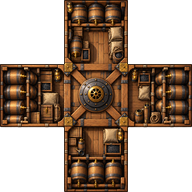
Great Powder Magazine
Powder · P1 · 192 × 192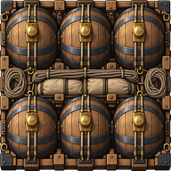
Large Powder Kegs
Powder · P1 · 192 × 192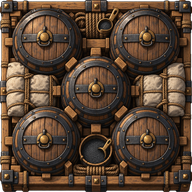
Heavy Iron-bound Powder Kegs
Powder · P1 · 192 × 192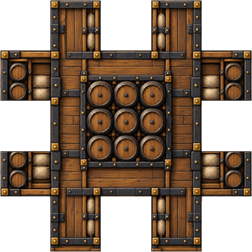
Grand Powder Magazine
Powder · P1 · 320 × 320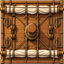
Small Square Rig
Sails · P1 · 64 × 64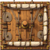
Small Schooner Rig, TutorialDrive
Sails · P1 · 64 × 64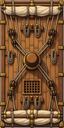
Square Rig
Sails · P1 · 64 × 128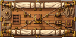
Schooner Rig, Sea Anchor
Sails · P1 · 128 × 64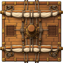
Large Square Rig
Sails · P1 · 128 × 128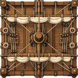
Large Schooner Rig
Sails · P1 · 128 × 128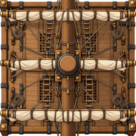
Grand Rig
Sails · P1 · 192 × 192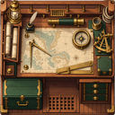
Small Boat Captain, Small Boat Gunners, Small Boat Bulwarks +1
Boats · P1 · 128 × 128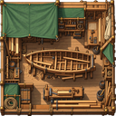
Small Boat Workshop
Boats · P1 · 128 × 128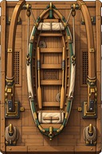
Small Longboat Davit M11, Small Longboat Davit M21, Small Longboat Davit M31 +8
Boats · P1 · 128 × 192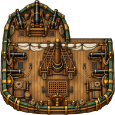
Boat Captain, Boat Gunners, Boat Bulwarks +1
Boats · P1 · 192 × 192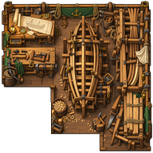
Boat Workshop
Boats · P1 · 192 × 192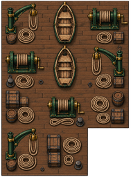
Longboat Davit M11, Longboat Davit M21, Longboat Davit M31 +8
Boats · P1 · 192 × 256Large Boat Captain, Large Boat Gunners, Large Boat Bulwarks +1
Boats · P1 · 256 × 256Large Boat Workshop
Boats · P1 · 256 × 256Large Longboat Davit M11, Large Longboat Davit M21, Large Longboat Davit M31 +8
Boats · P1 · 320 × 192Gunnery Sight
Special · P1 · 64 × 64Loading Crew, Powder Focus
Special · P1 · 64 × 64Ballast
Special · P1 · 64 × 64Oak Ribs
Special · P1 · 64 × 64Small Ship's Carpenter
Special · P1 · 64 × 64SuperStealth, Decoy Flags, Steering Gear
Special · P1 · 128 × 64Fire-ship Charge
Special · P1 · 128 × 128Loading Crew M2, Powder Focus M2
Special · P1 · 128 × 128Bilge Keel
Special · P1 · 128 × 128Ship's Carpenter
Special · P1 · 128 × 128Rangefinder
Special · P1 · 128 × 192Storm Sails
Special · P1 · 192 × 192Small Crew Quarters
Special · P1 · 128 × 192Infinity Stone
Special · P1 · 192 × 192Smoke Screen, Bulwark
Special · P1 · 192 × 192GravityGenerator, Large Powder Magazine
Special · P1 · 192 × 192Crew Quarters
Special · P1 · 192 × 192Large Crew Quarters
Special · P1 · 256 × 256Small Thunder Gun M3
Guns · P1 · 64 × 64Rocket Launcher M2
Guns · P1 · 64 × 192Maelstrom Cannon
Guns · P1 · 128 × 128Heavy Leech Harpoon
Guns · P1 · 192 × 192Whirlpool Charm
Guns · P1 · 192 × 192Small Fire Cannon, Small Carronade
Guns · P2 · 64 × 64Small Harpoon Gun
Guns · P2 · 64 × 64Small Rocket Rack
Guns · P2 · 64 × 64Small Thunder Gun
Guns · P2 · 64 × 64Small Plunder Hook, Plunder Hook, Grappling Line
Guns · P2 · 64 × 128Small Carronade M2
Guns · P2 · 64 × 128Small Carpenter's Line, Small Harpoon Gun M2
Guns · P2 · 64 × 128Rocket Rack
Guns · P2 · 128 × 64Rocket Launcher, Rocket Rack M3
Guns · P2 · 64 × 128Small Thunder Gun M2
Guns · P2 · 64 × 128Small Tar Slick, Boarding Hooks
Guns · P2 · 64 × 128Small Spar Torpedo
Guns · P2 · 64 × 128Fire Harpoon, Leech Harpoon
Guns · P2 · 64 × 192Firework Cannon
Guns · P2 · 64 × 192Grapeshot Blaster
Guns · P2 · 64 × 192Siege Mortar
Guns · P2 · 64 × 192Carronade
Guns · P2 · 64 × 192Carronade M2
Guns · P2 · 64 × 192Long Gun
Guns · P2 · 64 × 192Swivel Battery
Guns · P2 · 64 × 192Spar Torpedo, Spar Torpedo M2, Small Chain Net
Guns · P2 · 64 × 192Fire-pot Thrower, Fire-pot Thrower M2
Guns · P2 · 128 × 128Swivel Gun
Guns · P2 · 128 × 128Grapeshot Blaster M2, Siege Mortar M2, Long Culverin
Guns · P2 · 64 × 256Harpoon Gun
Guns · P2 · 128 × 128Small Long Harpoon
Guns · P2 · 64 × 256Rocket Rack M2
Guns · P2 · 128 × 128Thunder Gun
Guns · P2 · 192 × 128Heavy Spar Torpedo, Chain Net
Guns · P2 · 64 × 256Tar Slick, Smoke Torpedo
Guns · P2 · 128 × 128Heavy Carronade
Guns · P2 · 64 × 320Heavy Grapeshot Blaster, Acid Cannon
Guns · P2 · 128 × 192Chain-shot Cannon
Guns · P2 · 128 × 192Heavy Rocket Rack, Heavy Acid Rocket
Guns · P2 · 192 × 128Heavy Rocket Rack M2, Cluster Rocket Rack, Heavy Rocket Rack M3
Guns · P2 · 128 × 192Fire Scatter-gun
Guns · P2 · 128 × 192Fragmentation Bomb, Heavy Infernal Torpedo, Heavy Fire Torpedo M1
Guns · P2 · 128 × 192Mine-thrower
Guns · P2 · 128 × 256Heavy Long Culverin
Guns · P2 · 128 × 256Heavy Chain-shot Cannon
Guns · P2 · 128 × 256Long Harpoon
Guns · P2 · 128 × 256Stalker Rocket Rack
Guns · P2 · 128 × 256Heavy Thunder Gun
Guns · P2 · 128 × 256Heavy Greek-fire Torpedo
Guns · P2 · 128 × 256Cluster Torpedo
Guns · P2 · 128 × 256Heavy Greek-fire Bomb, Heavy Greek-fire Bomb M2
Guns · P2 · 192 × 192Holy Cannon
Guns · P2 · 192 × 192Heavy Harpoon Gun M2, Heavy Smoke Torpedo
Guns · P2 · 192 × 192Oblivion Cannon
Guns · P2 · 192 × 192Heavy Acid Torpedo
Guns · P2 · 128 × 320Doom Harpoon
Guns · P2 · 192 × 320DroneBay L 1
Boats · P3 · 192 × 256DroneBay L 0
Boats · P3 · 256 × 320Storm Sails\_Boss
Special · P3 · 192 × 192Inertial Nullifier
Special · P3 · 192 × 192TutorialGun
Guns · P3 · 64 × 64TutorialMissile
Guns · P3 · 64 × 64Thunder Gun
Guns · P3 · 128 × 192StasisField L 2
Guns · P3 · 192 × 192Large Rusty Cannon
Guns · P3 · 192 × 256